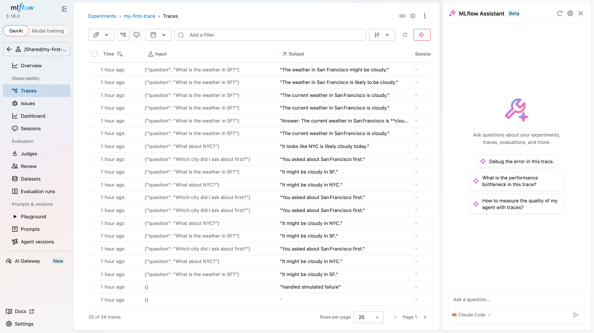
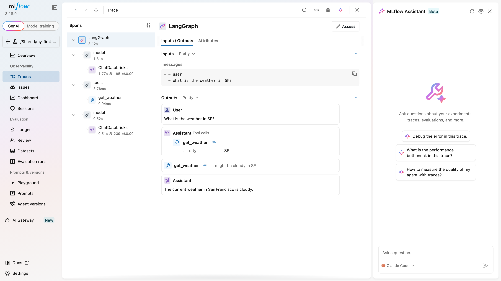
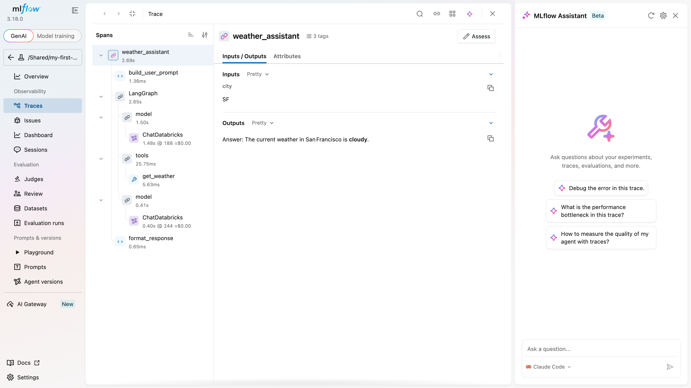
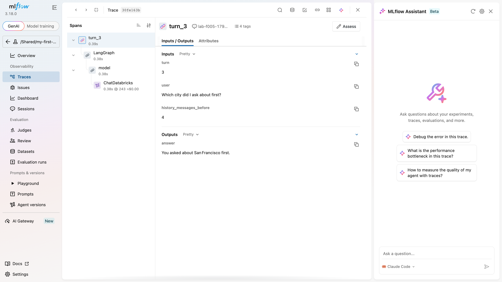
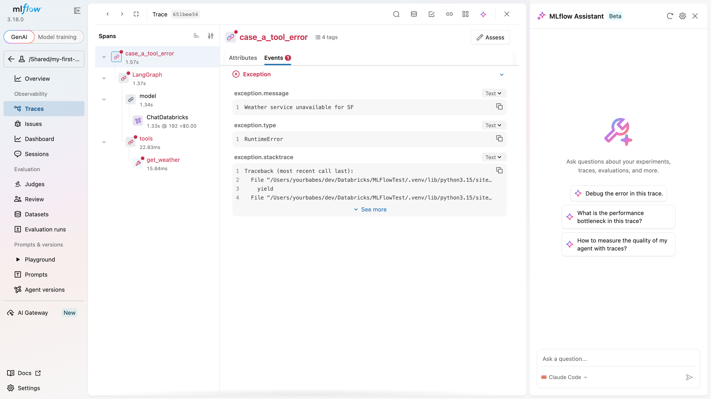
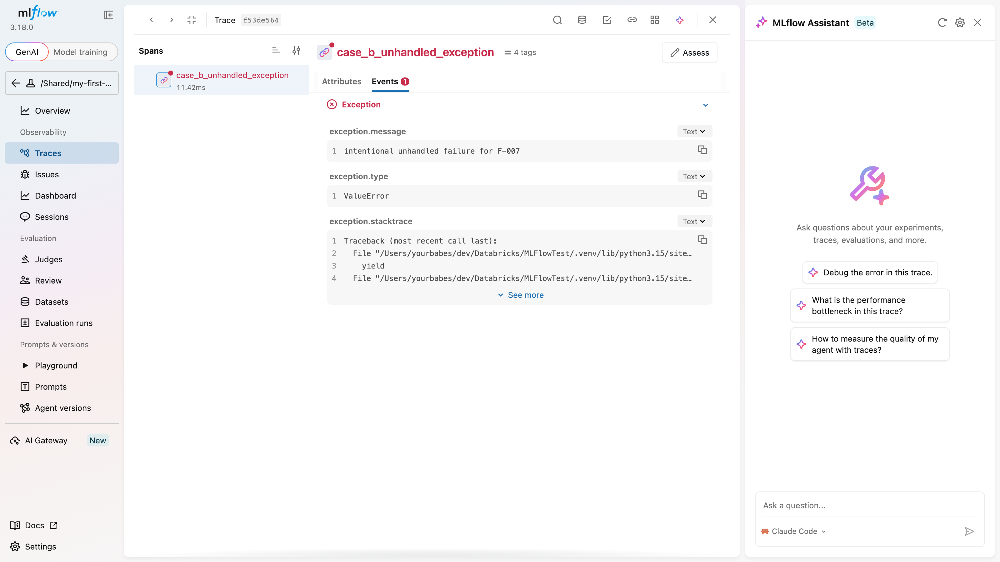
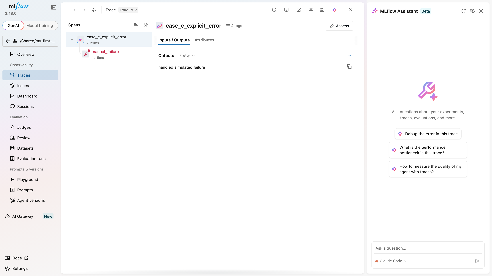
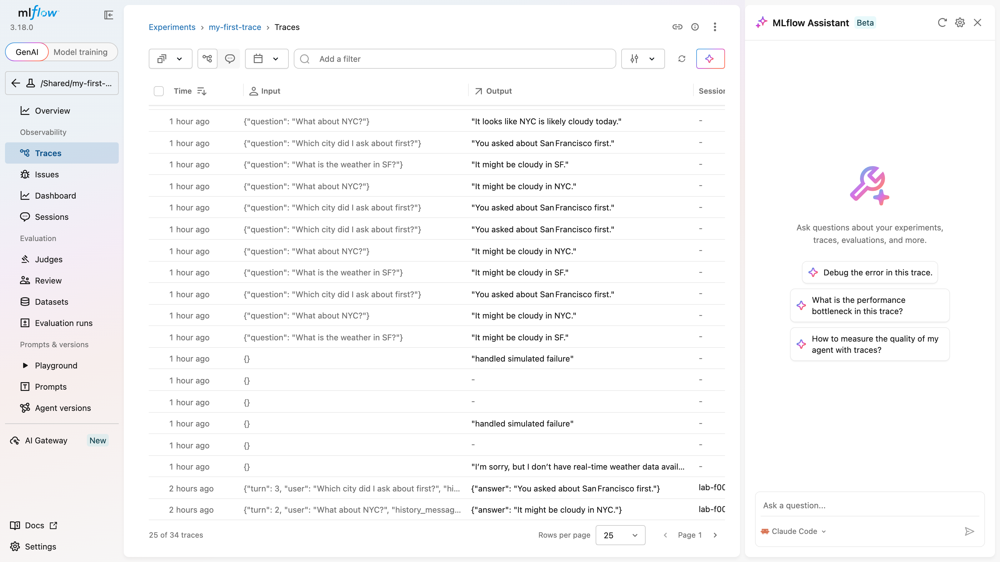

Live demo · Databricks MLflow 3 GenAI
GenAI tracing you can
Seven experiments behind a single loop: trace → inspect → measure → evaluate → document. Real traces, real screenshots, no external LLM key.
Databricks FM Autolog + manual spans
Sessions Failure signatures GenAI evaluation
Keep this to one breath. The background is the real traces list. If you want a cold open, advance to slide 2 and run the script live.
Act 1 · Cold open
34 real traces in one Databricks experiment
MLFLOW UI · TRACES TAB
/Shared/my-first-trace · inputs, outputs, state, duration, tokens, session and tags — all queryable.
.venv/bin/python trace_example.py
Then paste the printed trace ID into the search box. Auth is only ~/.databrickscfg.
Point at the columns: Time, Input, Output, Session, Duration, State, Tokens, Tags. Run the script live and paste the new ID. Land it: "That's the baseline."
Act 2 · What you just saw
Autolog sees the framework. Manual spans see your code.

7 SPANS · 3.12s
Baseline: ChatDatabricks + get_weather, captured automatically.
trace tr-054cbbc9…

10 SPANS · 2.69s
App boundary + pre/post-processing nest with the same autolog spans.
trace tr-0cb5f6d2…
One trace, not three. Manual spans parent the autolog spans — timing, I/O and tags stay queryable together.
If asked about stdout: no timing, no parent/child, no link to the model call. Traces have all three. The second screenshot is a different run of the same toy agent.
Act 3 · Conversations
Three turns. Three traces. One session.

TURN 3 · 0.39s · 4 SPANS
"Which city did I ask about first?" → "You asked about San Francisco first." — no tool call.
What the screenshot shows
Session lab-f005-1795028845 groups all three turns in the Session column.
Turn 2 switches city. Turn 3 recalls turn 1 from history_messages_before: 4.
Trace ID comes from span.trace_id, not get_last_active_trace_id().
Group turns under a session rather than merging them — each turn keeps its own inputs, outputs and timing.
Search the Traces tab by the session ID to see all three turns. The 4 spans on turn 3 prove recall came from history, not a tool call.
Acts 4 · Failure signatures
Same app. Three different failure shapes.

TRACE · ERROR
Tool raises → trace ERROR + exception.type + stacktrace.
tr-cbd09f84…

TRACE · ERROR
Unhandled exception → trace ERROR, one span, exception events.
tr-3dbea41e…

TRACE · OK
Handled error → child span ERROR only; trace stays OK.
tr-193c937a…
Filter with status = 'ERROR' — not state. A pager should fire on the first two, not the third.
The failing tool had to look legitimate: one labelled "deliberately broken" made the model refuse the call, so no error span appeared. Open the Attributes tab on either error trace to show the stacktrace.
Act 5 · Prove it
Measure and score what already happened

SEGMENT BEFORE YOU AGGREGATE
Error rows legitimately show no tokens; multi-turn rows grow with context.
4.3 s
slowest of 17 traces
~100% model time (2,742 + 1,530 ms); graph/tool overhead ~4 ms.
3 + 5
clean records + planted controls
3/3 clean pass every scorer; 5/5 controls caught; full run: 16 × 4, 0 failed, 3 skipped.
A live run scored "New York City" as False for expected "NYC" — fixed with an alias map. Five planted controls are caught 5/5 . The last one — right city, wrong fact — passes city, relevance, and length, and is caught only by the ground-truth fact check.
Latency, tokens and cost are first-class TraceInfo fields. Answerless error traces have null usage and drag mixed aggregates. The four scorers are registered in the experiment — this is a harness, not a one-off. Run evaluate_traces.py --pilot --with-controls for this slide: the clean rows stay green, every planted control is flagged, and the report calls out the control the old three-scorer suite would have passed.
Close · Honest limit
The pipeline is the achievement.
Repeatable loop: trace → inspect → measure → evaluate → document.
11 short weather answers from one toy agent — plus 5 planted controls — prove the pipeline works, not production quality.
Next: full-run controls + contradiction checks + A/B comparisons (F-014), tag conventions (F-010), monitoring (F-013).
Writeups: docs/LAB_BOOK.md · docs/experiments/001–009 · docs/FINDINGS_AND_LEARNINGS.md
Leave the Traces tab open for Q&A and open questions about trace IDs, scorer design, and cost.